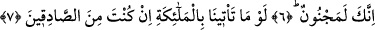

KUR’ÂN’I BİZ İNDİRDİK
BİZ KORUYACAĞIZ
4. Helâk ettiğimiz hiçbir ülke yoktur ki hakkında (bizce) bilinen bir yazgı olmasın.
5. Hiçbir millet, ecelinin önüne geçemez, ve onu geciktiremez.
6. Dediler ki: “Ey kendisine Kur’an indirilen (Muhammed)! Sen mutlaka bir
mecnunsun!”
7. “Eğer doğru söyleyenlerden idiysen, bize melekleri getirmeliydin.”
8. Biz melekleri ancak hak ile indiririz. O zaman onlara mühlet verilmez.
9. Kur an’ı kesinlikle biz indirdik; elbette onu yine biz koruyacağız.
Bu âyette onların azâbının kıyâmet gününe tehir edilmesinin ve azâbı dünyâda acele
verilen ümmetlere dâhil edilmemelerinin sırrı beyan edilmeye başlanıyor ve şöyle
buyruluyor: “Helâk ettiğimiz hiçbir ülke yoktur ki,” bazı ülkeleri yaptığımız gibi bizzat
kendisini veya ahâlisini yerin dibine batırarak yahut başka ülkelere yaptığımız gibi
ahâlisini helâk edişimizin ardından ahâlisiz bırakmak sûretiyle “hakkında (bizce)
bilinen bir yazgı olmasın.” ülkenin mutlaka bununla ilgili olarak levh-i mahfuzda
kesinlikle uyulması gereken ve hikmet gereği olduğu için değiştirilmesi imkânsız olan
yazılı, belirlenmiş, ne unutulan ne de gaflet edilen belirli bir eceli olmasın. Bu ecel
unutulmaz ve gaflet edilmez değildir ki ileri ve geri alınarak ona muhâlefet mümkün
olsun.
Buna göre mânâ şöyledir: Biz hiçbir ülkeyi bir yazgısı olmadan, yâni helâk edilmesi
için vakti belirlenmiş bir ecel olmadan hiçbir durumda helak etmedik. Biz o
eceli/süreyi vakti gelip çatmadan önce yazdık. O, bilinen ve gaflet edilmeyen bir
süredir. Onun için ileri ve geri alınmak sûretiyle ona muhâlefet etmek mümkün değildir.
Âyete şöyle de mânâ verilebilir: ‘Biz belirli bir yazgısı olmayan hiçbir kenti helâk
etmedik.’